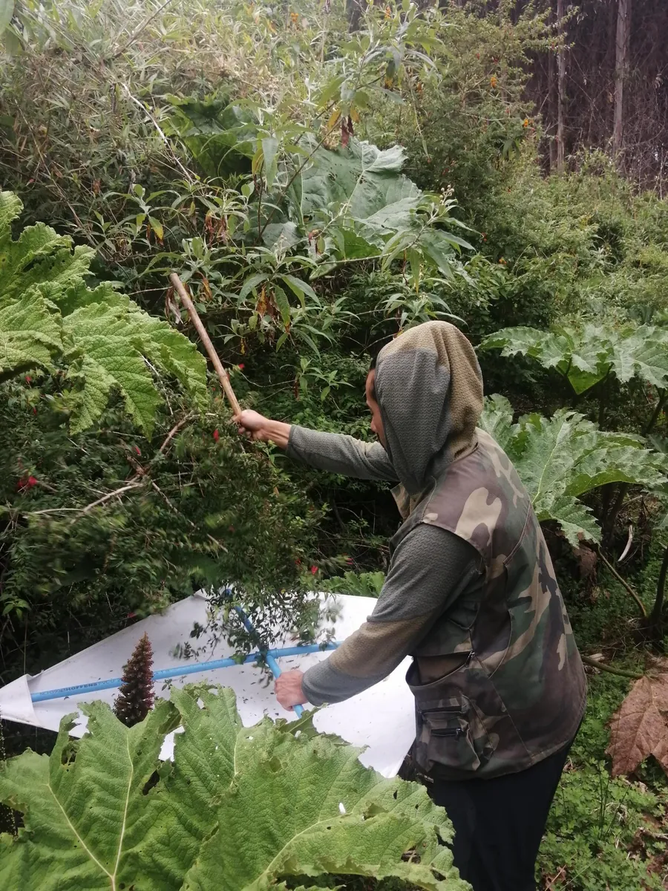

Línea base de artrópodos
Muestreo, identificación taxonómica y caracterización de invertebrados terrestres para proyectos sometidos al SEIA.
Estamos en el ambiente
Consultoría, investigación y educación ambiental para conocer, evaluar y conservar nuestros ecosistemas.
Ciencia aplicada
Generamos información ambiental confiable para la evaluación, gestión y conservación de los ecosistemas, combinando experiencia científica con soluciones adaptadas a cada proyecto.
Nuestra empresa
Desde 2018 integramos ciencia, consultoría y educación desde Talcahuano, Región del Biobío, para desarrollar proyectos en ecosistemas desérticos, ambientes acuáticos y bosques templados de Chile.
La experiencia de nuestro equipo abarca líneas base para el SEIA, monitoreos de biodiversidad, identificación taxonómica y programas de educación ambiental.
Conocer la empresa →Áreas de trabajo
Soluciones técnicas y educativas diseñadas según el alcance, el territorio y los objetivos de cada organización.
Muestreo, identificación taxonómica y caracterización de invertebrados terrestres para proyectos sometidos al SEIA.
Levantamiento y seguimiento de información de biodiversidad con metodologías de terreno.
Identificación de entomofauna y comunidades biológicas de sistemas dulceacuícolas.
Talleres, programas para empresas, interpretación ambiental, yoga y naturaleza.

Investigación
Nuestra práctica profesional se sustenta en investigación publicada sobre ecología, entomología, herpetología y taxonomía.
Catchpole, Sam & Carrera-Suárez, L. E. · PeerJ 11: e15020.
Confían en nuestro trabajo


Trabajemos juntos
Conversemos sobre el alcance y la mejor estrategia para tu proyecto.